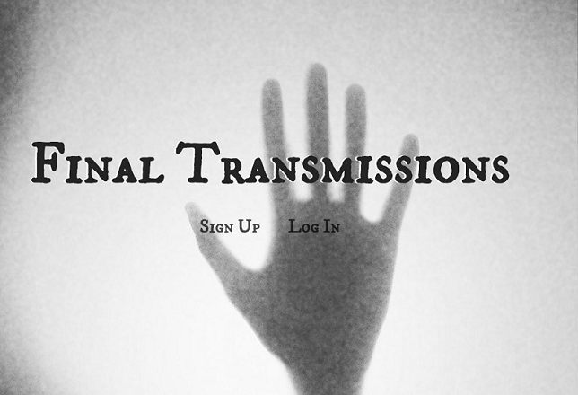

BACK
Final Transmissions
A ghost themed augmented reality app utilizing webRTC, AR, Geolocation, and proximity based sound.
Technologies Used
Languages:
HTML5, CSS3, JavaScript, NodeJs
Libraries:
AR.js Howler.js Pug.js

Source Code
|
Live Version